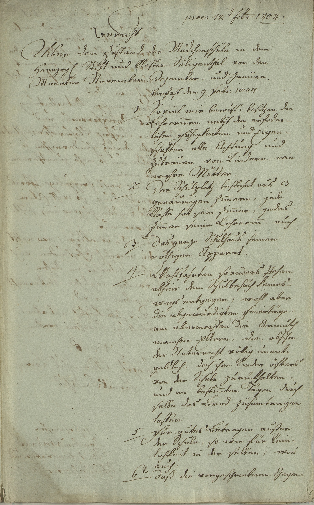

StA Landshut, Oberschul- und Studienkommissariat Straubing, 84



Kommentar
Editor: magdalena.weileder@textgrid.de
Archiv: StA Landshut
Bestand: Oberschul- und Studienkommissariat Straubing
Signatur: 84
Ort:
Datum: 1804 Februar 9
Schlagwort: Akt
Schwierigkeitsgrad: leicht
Kurzbetreff:
Bericht über den Zustand der Mädchenschule Seligenthal
Bericht über den Zustand der Mädchenschule Seligenthal
Schreiberhände:
- Praesentatum-Vermerk (S1)
- Schreiber des Berichts (S2)
Kommentar:
Gezeigt wird ein Bericht über den Zustand der Mädchenschule im Kloster Seligenthal von November 1803 – Januar 1804 aus einem Akt der Oberschulinspektion Straubing, der auch Stücke über deren Besetzung sowie die Aufsicht über die Schulen in Landshut, Berg ob Landshut, Achdorf, Altdorf und Seligenthal enthält.
Der Bericht ist in Kurrentschrift verfasst, Umlaute werden nur bei Kleinbuchstaben mit zwei Punkten gekennzeichnet (z.B. Z. 12: Mütter), für Ü ist dagegen ein i nachgesetzt (Z. 3: Uiber). Der Schreiber des Berichts und der Schreiber des Praesentatum-Vermerks, der humanistische Kursive lateinische, Kurrent für deutsche Wörter gebraucht, verwenden unterschiedliche Formen für die Ziffer 8: stehend (Z. 1) und liegend (Z. 6).
Gezeigt wird ein Bericht über den Zustand der Mädchenschule im Kloster Seligenthal von November 1803 – Januar 1804 aus einem Akt der Oberschulinspektion Straubing, der auch Stücke über deren Besetzung sowie die Aufsicht über die Schulen in Landshut, Berg ob Landshut, Achdorf, Altdorf und Seligenthal enthält.
Der Bericht ist in Kurrentschrift verfasst, Umlaute werden nur bei Kleinbuchstaben mit zwei Punkten gekennzeichnet (z.B. Z. 12: Mütter), für Ü ist dagegen ein i nachgesetzt (Z. 3: Uiber). Der Schreiber des Berichts und der Schreiber des Praesentatum-Vermerks, der humanistische Kursive lateinische, Kurrent für deutsche Wörter gebraucht, verwenden unterschiedliche Formen für die Ziffer 8: stehend (Z. 1) und liegend (Z. 6).
Entzifferung
(Absatz Beginn)
1 (Praesentatum-Vermerk:) praes(entatum)(Wechsel des Schriftsystems) 12t(er) febr(uar) 1804.
2 (Schreiber des Berichts:) Bericht
3 Uiber denZustandder Mädchenschule in dem
4 Herrzog(lichen) Stiftund Kloster Seligenthal von den
5 Monaten November, Dezember, und Januar.
6 Verfast den 9 Febr(uar) 1804
7 1 Soviel mir bewust, besitzen die
8 Lehrerin(n)en nebst den erforder-
9 lichen Fähigkeiten und Eigen-
10 schaften alle Achtung und
11 Zutrauen von Kindern, wie
12 wahre Mütter.
13 2 Der Schulplatz bestehet aus 3
14 geräumigen Zim(m)ern, jede
15 Klasse hat sein Zim(m)er, jedes
16 Zim(m)er seine Lehrerin(n): auch
17 3 das ganze Schulhaus seinen
18 nöthigen Apparat.
19 4 Wahlfahrten so anders stehen
20 allhier dem Schulbesuch keines-
21 wegs entgegen; wohl aber
22 die abgewürdigten Feiertäge:
23 am allermeisten die Armuth
24 mancher Eltern, die, obschon
25 der Unterricht völlig unent-
26 geldlich, doch ihre Kinder öfters
27 von der Schule zurückhalten,
28 und an bestim(m)ten Tägen durch
29 selbe das Brod zusamtragen
30 lassen.
31 5 Für gutes Betragen außer
32 der Schule, so wie für Rein-
33 lichkeit in der selben; wie
34 auch
35 6todaß die vorgeschriebnen Gegen-
(Absatz Ende)
Transkription
(Absatz Beginn)
1 (Praesentatum-Vermerk:) Praesentatum(Wechsel des Schriftsystems) 12ter Februar 1804.
2 (Schreiber des Berichts:) Bericht
3 uiber den Zustand der Mädchenschule in dem
4 herrzoglichen Stift und Kloster Seligenthal von den
5 Monaten November, Dezember und Januar.
6 Verfast den 9. Februar 1804.
7 1. Soviel mir bewust, besitzen die
8 Lehrerinnen nebst den erforder-
9 lichen Fähigkeiten und Eigen-
10 schaften alle Achtung und
11 Zutrauen von Kindern, wie
12 wahre Mütter.
13 2. Der Schulplatz bestehet aus 3
14 geräumigen Zimmern, jede
15 Klasse hat sein Zimmer, jedes
16 Zimmer seine Lehrerinn: auch
17 3. das ganze Schulhaus seinen
18 nöthigen Apparat.
19 4. Wahlfahrten so anders stehen
20 allhier dem Schulbesuch keines-
21 wegs entgegen; wohl aber
22 die abgewürdigten Feiertäge:
23 am allermeisten die Armuth
24 mancher Eltern, die, obschon
25 der Unterricht völlig unent-
26 geldlich, doch ihre Kinder öfters
27 von der Schule zurückhalten,
28 und an bestimmten Tägen durch
29 selbe das Brod zusamtragen
30 lassen.
31 5. Für gutes Betragen außer
32 der Schule, sowie für Rein-
33 lichkeit in derselben, wie
34 auch
35 6to daß die vorgeschriebnen Gegen-
(Absatz Ende)